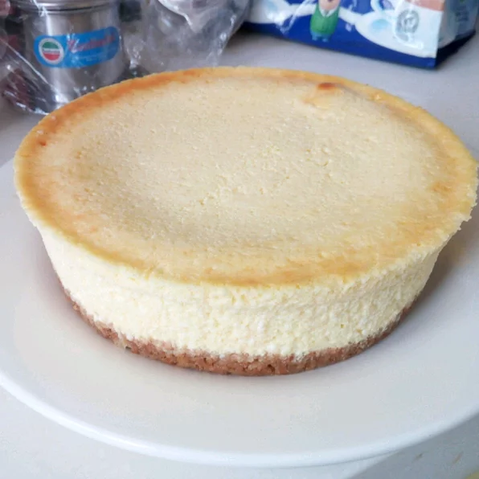

Basic Cheesecake

(picture sourced from here)
Description
Cheesecake is a really simple dessert, but tastes fantastically rich! Serve topped with fresh fruit and cream! (I love a bit of passionfruit on my cheesecake!)
Ingredients
- Crushed digestive biscuits
- Finely chopped walnuts
- Brown sugar
- Ground cinnamon
- Ground nutmeg
- Melted butter
- Three packages cream cheese (e.g. Philadelphia)
- White sugar
- Sour cream
- Double cream (e.g. Pura)
- All-purpose flour
- Vanilla extract
- Three eggs
Steps
- Preheat oven to 175C. In a medium bowl, combine one cup crushed digestive biscuits, 1/4 cup chopped walnuts, three tablespoons brown sugar, one tablespoon ground cinnamon, 1/2 teaspoon ground nutmeg and five tablespoons melted butter. Mix well and press into the bottom of a nine-inch springform pan. Bake in preheated oven for ten minutes. Remove from oven and allow to cool.
- In a large bowl, beat the cream cheese and one cup of white sugar together until smooth. Beat in one cup each of sour cream and heavy cream. Blend in three tablespoons of flour and one tablespoon of vanilla. With mixer on low speed, add eggs one at a time. Pour batter over crust.
- Bake in the preheated oven for sixty to seventy minutes, or until center is almost set (filling will be soft). Refrigerate at least six hours or overnight before removing from pan.
Return to homepage